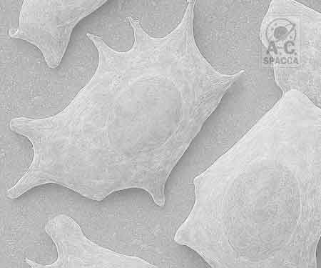

• BIOGRAFIA
Nascido no Brasil em 10 de abril de 1970, mudou-se para os Estados Unidos ainda criança, onde completou sua educação formal, graduando-se em Ciências da Computação com especialização em Programação para Redes e Banco de Dados em soluções da Microsoft pelo Texas State Technical College. Sua carreira profissional inclui passagens por empresas de tecnologia de ponta, onde atuou no desenvolvimento de sistemas internos e distribuídos, além de soluções inovadoras de análise e gerenciamento de dados e informações de alta demanda, disponibilidade e segurança. Contribuiu ativamente para a criação dos conceitos de BBS, NET, XML, SOA, BYOD, e consequentemente, contribuíndo com a CLOUD, adaptando seus painéis de controle modulares pioneiros e eficazes. Paralelamente, Spacca sempre cultivou um interesse profundo pela literatura, especialmente nos gêneros científicos e de ficção. Atualmente, vive com sua esposa e filho em uma área localizada a mais de 100 km de grandes cidades.
Sistemas automatizados aplicados ao desenvolvimento biológico em ambientes controlados. Buscamos espécies adaptadas a condições extremas, como encontradas em ambientes estéreis, subaquáticos, subterrâneos ou em atmosferas de baixa pressão. Essa abordagem possibilita a produção de alimentos em locais onde as condições naturais são inexistentes e contribui para a pesquisa científica de colônias.
PDF v1.53
Estímulo à depuração de células que perderam a capacidade de se dividir, mas ainda permanecem metabolicamente ativas. Essas células se acumulam nos tecidos, contribuindo para o processo de envelhecimento. A pesquisa nessa área busca compreender os mecanismos que levam à senescência celular, bem como desenvolver estratégias para eliminar ou reverter os efeitos dessas células, promovendo saúde e longevidade.
PDF v2.05
No Centro de Estudos em Logística Biológica, desenvolvemos metodologias voltadas ao cultivo de espécies vegetais inspiradas no conceito da Panspermia, buscando variedades de origem exógena. O objetivo central é identificar substâncias bioativas capazes de promover a eliminação de células senescentes do organismo humano. Trata-se de uma missão de elevada complexidade, conduzida em ambientes hostis, que resultou em significativas perdas e avanços limitados. A proposta é que, por meio desse processo, sejam identificados novos compostos bioativos. Para isso, separamos incubadoras subterrâneas e subaquáticas com condições controladas de oxigênio, temperatura, umidade e luminosidade, onde cultivamos espécies vegetais como possíveis fontes de alimento, e outras sem nenhum controle, tornando-as um ambiente estéril, quente e seco, onde a evolução é livre para ocorrer. Continuamos a aglomerar coletas aguardando reação ou emissão que a provoque.
CLASSIFICADOUsufruindo de sua insônia crônica, produziu em seu tempo livre obras de entretenimento que exploram temas de ficção, mistério e aventura.